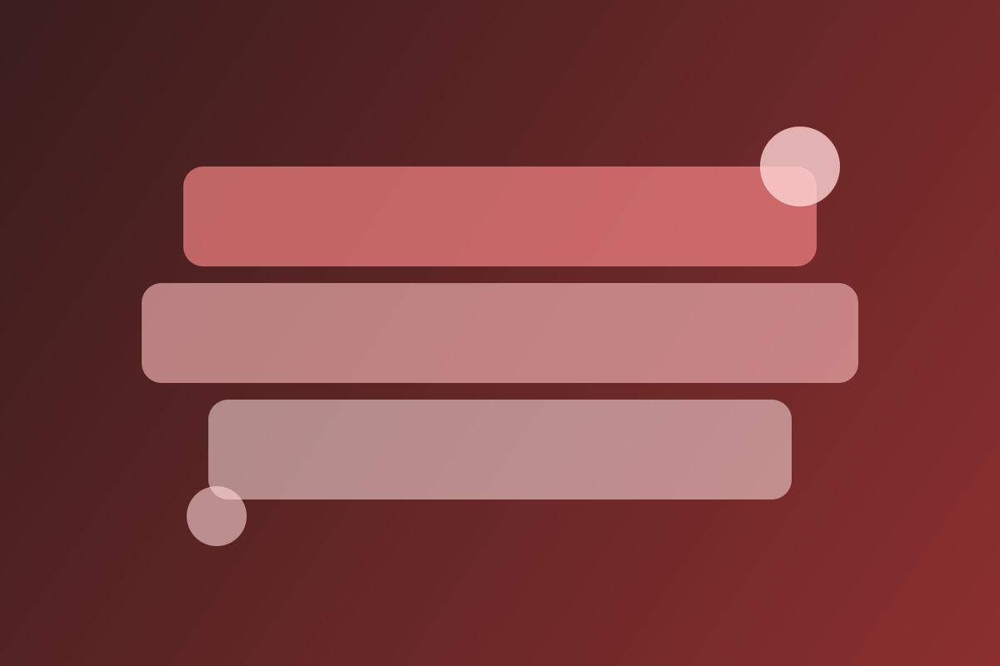
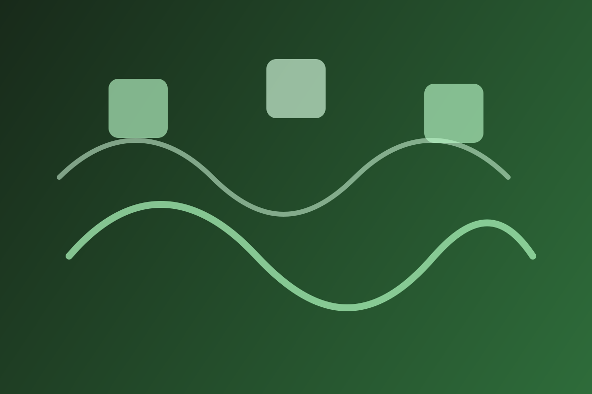
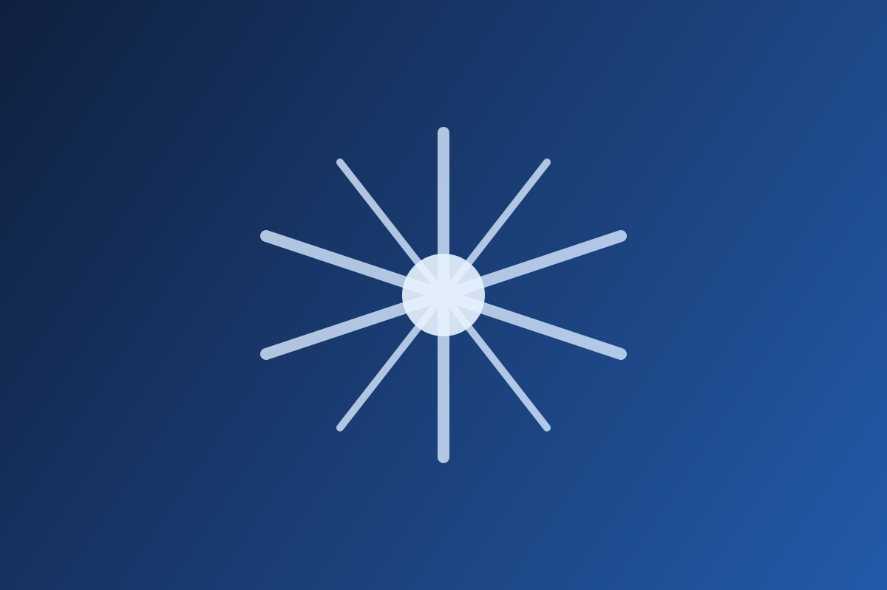
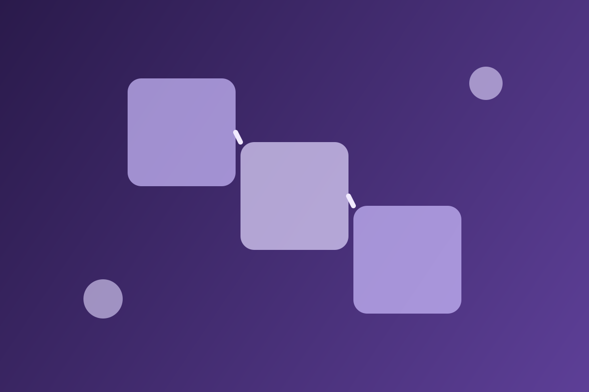
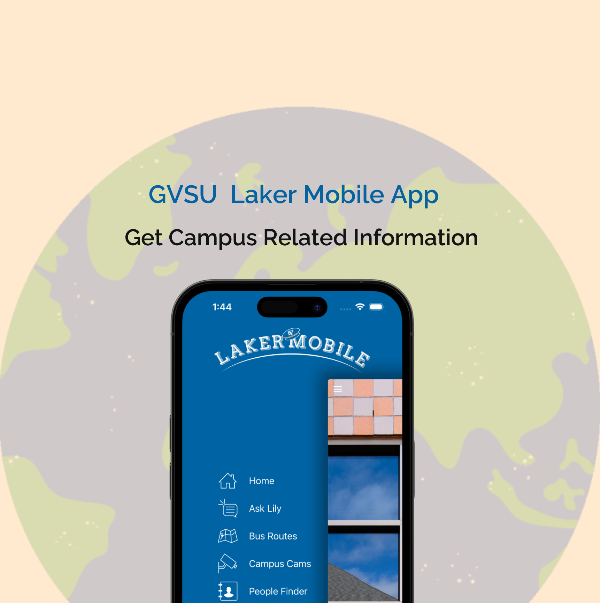
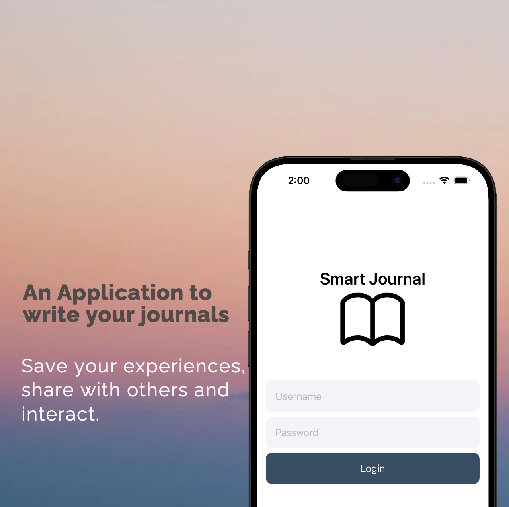

2+
Years Reliability Engineering

Hello, I'm
DevOps / Site Reliability Engineer
Atlanta, GA


Years Reliability Engineering
Major Infrastructure Initiatives
Downtime During Key Migrations
Live SRE Console
$ |
Monitoring production systems...
Get To Know More
Years
Site Reliability & DevOps / Cloud Infrastructure
BS Computer Science
MS Applied Computer Science
I design systems for uptime first. Clean runbooks, strong alert signal quality, safe change windows so upgrades and migrations happen without production disruption.
I build dependable platforms with measurable operational outcomes.
As a DevOps and Site Reliability Engineer, I focus on production resilience, automation, and observability. Delivered zero-downtime PostgreSQL and Redis upgrades, improved on-call response, and built stronger deployment guardrails for platform teams.
Explore My
Greensky LLC | March 2025 - April 2026 | Atlanta, GA
Operated AWS infrastructure across production and development environments, managed distributed Aurora RDS PostgreSQL and Redis services, automated rollouts with GitLab CI/CD, and drove reliability improvements through on-call incident response, root cause analysis, and DR exercises.
Grand Valley State University | Feb 2024 - March 2025 | Grand Rapids, MI
Designed and deployed AWS infrastructure using CloudFormation, implemented CI/CD with GitHub Actions, and built AI-native application features including a retrieval-augmented chatbot integrated into the GVSU Laker mobile app.

Experienced
Experienced
Experienced
Experienced
Intermediate
Experienced
Experienced
Intermediate
Experienced
Intermediate
Intermediate
Intermediate
Intermediate
Intermediate
Experienced
Experienced
Intermediate
Intermediate
Intermediate
Intermediate
Intermediate
Intermediate
Intermediate
Intermediate
Intermediate
Intermediate
Hands-on impact across your recent platform initiatives.
Fast reaction game inspired by on-call triage.
Press start to begin a 20-second incident shift.
Highlighted Resume
Orchestrated a zero-downtime major version upgrade for the Kong API Gateway PostgreSQL database across all lifecycle environments, including production cutover during maintenance windows without service disruption.

Executed rolling Redis replication-group upgrades from v5 to v7 across every environment, using staged node replacement and continuous validation to maintain zero downtime.

Migrated MySQL schemas, upgraded Rundeck v3 to v5, completed DNS cutover with no production downtime, and re-architected operational jobs into version-controlled GitLab pipelines.

Built an end-to-end ingestion pipeline for Snowflake authentication events, enabling clear, tagged, and reliably routed security telemetry for downstream monitoring.

Contributed to an internal CDK library and migrated S3 buckets across lifecycles into a standardized Bucket Manager framework, improving governance and consistency.


Recent Writing
Featured · Career
Your first pager alert at 3 AM changes how you think about reliability forever. Lessons from real incidents, not sandbox exercises.
Read Full ArticleAWS · Career
How “we’ll fix it later” becomes alert fatigue, cloud cost creep, and hidden reliability risk across production environments.
Read Full ArticleAWS · Observability
Multi-region architecture is only half the story; real resilience starts after failover when operational dependencies surface.
Read Full ArticleCI/CD · Linux
A kernel retention issue quietly blocked CVE patching until pre-patch `/boot` checks and lifecycle parity fixed the workflow.
Read Full ArticleCI/CD · Kubernetes
Env vars from a ConfigMap are injected at pod startup — Kubernetes won't push updates into running containers. File mounts do update automatically. Same resource, completely different behavior.
Read Full ArticleAWS · ECS · Observability
Clean exits, no errors, automatic restarts — but ECS kills from outside the process and leaves no evidence inside it. Two task definition fields set identically was all it took.
Read Full ArticleCI/CD · Terraform
One cancelled pipeline job never released its state lock. Twenty minutes later, the whole team was blocked from deploying anything — including the hotfix that started it all.
Read Full ArticleAWS · Platform Engineering
S3 replication works. Knowing when 1.8 billion objects actually finished — and closing the old pipe before it silently corrupts the new bucket — is the hard part.
Read Full ArticleCI/CD · Security
We patched it three times and it kept coming back — because floating Docker tags meant the image scanned and the image running were never actually the same bytes.
Read Full ArticleCI/CD · Kubernetes
Pipeline green, staging clean — and the service went completely dark. Two unset fields and Kubernetes defaults that don't guarantee what their name implies.
Read Full ArticleAWS · Security
IMDSv1 sits enabled by default on EC2 instances with no auth required — the same vector that exposed 100 million Capital One records. One command fixes it.
Read Full ArticleAWS · IAM · Security
Nobody grants wildcards maliciously. They happen at 4 PM on a Friday before a release — and IAM Access Analyzer plus SCPs are what contain the blast radius.
Read Full ArticleMore Writing
Explore the full collection of posts on reliability engineering, AWS operations, observability, incident response, and platform delivery.
Open Full BlogGet in Touch